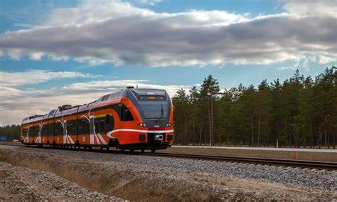

Tartu Student Days festival begins on Monday with pancake breakfast
The autumn edition of this year's Tartu Student Days festival gets underway on Monday, September 23. This year's festival includes nearly 60 different events and begins, as per tradition, with a free pancake breakfast in Town Hall Square (Raekoja Plats).

Estonian government comes up with €2 million for Tartu-Riga train
The Estonian government decided at its meeting Tuesday to allocate €2 million to Elron for the launch of the Tartu-Riga passenger rail link, meaning that the planned new line could enter service next spring.